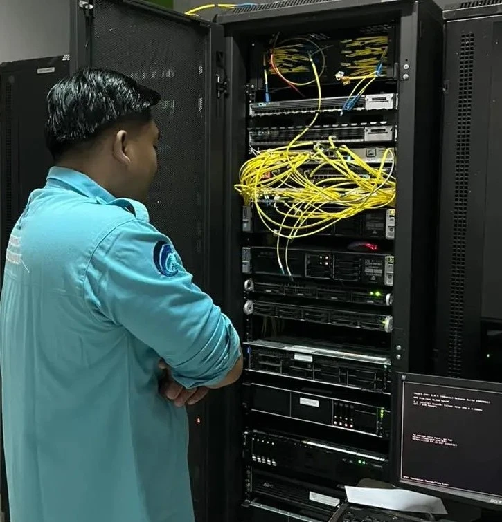

Backend Developer • API Builder • System Architect
Building reliable
backend experiences
for modern products
I'm Wandi Irawan, a full-time and freelance backend web developer focused on crafting scalable systems, efficient APIs, and robust digital solutions that help products grow with confidence.
20+
Projects Completed
3+
Years Experience
100%
Backend Focused
Speciality
API & System Development

Wandi Irawan
Scalable systems for modern digital products
Current Focus
Backend Systems, REST APIs, and Deployment Optimization
Core Stack
Laravel • MySQL • Node.js
About
What I Do
I specialize in backend web development with expertise in Laravel, CodeIgniter 4, MySQL, Node.js, Bootstrap, and jQuery. My focus is on building secure, efficient, and maintainable web applications that deliver real value. I also have experience managing web servers with Apache and Nginx to ensure stable deployment and optimal performance.
Experience
Backend development, API integration, database design, and production deployment.
Focus
Clean architecture, reliable systems, and scalable digital solutions.
Services
What I Can Help You With
I provide backend web development services for individuals, startups, and businesses that need reliable, scalable, and well-structured digital systems.
Backend Development
Building secure, maintainable, and scalable server-side applications tailored to business needs.
REST API Integration
Developing and integrating APIs for dashboards, mobile applications, and third-party platforms.
Database Management
Designing efficient database structures with optimized queries and reliable data handling.
Deployment & Maintenance
Deploying and maintaining web applications on production servers using Apache and Nginx.
Contact
Let’s build something great together
I help transform ideas into reliable backend systems and efficient web applications. If you're interested in working together, feel free to reach out at andiimron43@gmail.com .